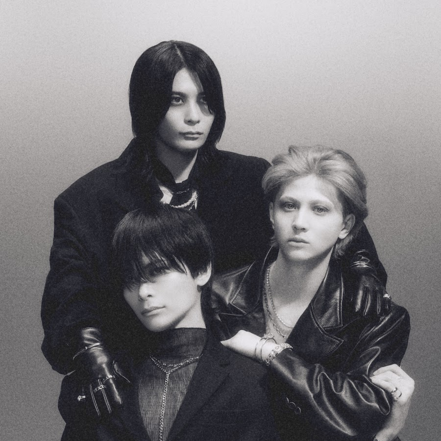

J-POP LIVE IN KOREA
J-POP / ROCK
LET ME KNOW
2026년 11월 28일(토) 오후 6:00 · 명화라이브홀TICKETING DETAILS
예매 조건·티켓 안내
확인된 공연별 조건입니다. 가격은 공연 정보 요약에서 확인할 수 있습니다. · 마지막 확인 2026-09-25
- 관람 등급
- 만 8세 이상 관람가.
- 공연 형식·시간
- NOL 상품 안내는 공연 시간을 70분으로 표시합니다. 스탠딩과 지정석은 모두 99,000원으로, 가격 차이 없이 관람 형태가 구분됩니다.
- 선예매·일반예매 조건
- LET YOU KNOW 회원 한정 선착순 선예매는 2026년 7월 27일 18시부터 30일 23시 59분까지 진행됐습니다. 7월 24일 오전 10시까지 가입한 회원만 신청할 수 있고 FC 인증은 7월 27일 정오부터 시작됐습니다. 1인 최대 2매이며 예정 수량 소진 시 종료되는 방식입니다. 일반 티켓 오픈은 7월 31일 오후 6시였습니다. 판매 상태는 이 날짜만으로 판단하지 않습니다.
- 본인 확인·증빙 조건
- 공식 안내는 팬클럽 회원 자격과 별도 FC 인증을 선예매 조건으로 명시합니다. 일반 예매자의 별도 본인 확인 조건은 확인한 공개 자료에 기재되어 있지 않습니다.
- 티켓 수령·모바일 티켓
- NOL 상품 안내상 티켓은 2026년 11월 9일부터 10일까지 일괄 배송됩니다. 현장 수령 방식은 공개된 자료에서 확인되지 않았으므로 NOL 예매 내역을 확인하세요.
- 취소표가 풀리는 방식
- NOL 안내는 예매 후 7일 이내 취소 시 티켓 금액 전액 환불(예매 수수료 제외), 이후 관람일 10일 전까지 장당 4,000원, 9~7일 전 10%, 6~3일 전 20%, 2일 전부터 취소 기한까지 30%의 수수료를 표시합니다. 예약별 취소 기한은 예매 내역에서 확인해야 합니다.
ARTIST
아티스트 소개
공식 프로필에 따르면 Matty(보컬), Kehn(기타), Lyo(드럼)로 구성된 3인조이며, 활동은 2024년 1월 시작했습니다.
아티스트 공식 프로필 ↗ · 공식 프로필 확인 2026-09-25
LET ME KNOW 아티스트 정보 →VENUE & PREPARATION
공연장·관람 준비
YOUTUBE LINKS
관련 곡 영상
EDITORIAL NOTE
LET ME KNOW 음악 감상 노트
여일육 작성 · 주관적 편집 해석이며 공식 발표나 공연 세트리스트를 뜻하지 않습니다. · 편집·검증 기준
음악에서 살펴볼 점
LET ME KNOW는 신시사이저와 뉴웨이브 리듬 위에 기타와 서정적인 멜로디를 쌓는 3인조 밴드입니다. 매끈한 음원과 달리 무대에서는 드럼과 기타가 더 선명하게 앞으로 나오므로 리듬의 밀도 변화를 들어볼 만합니다. 한국 공연 경험을 이어 온 팀인 만큼 관객과 후렴을 주고받는 장면도 기대할 수 있습니다.
SOURCES
공식 출처와 검증 기록
일정 확인 2026-09-25 · 가격 확인 2026-09-25 · 판매 상태 확인 미확인